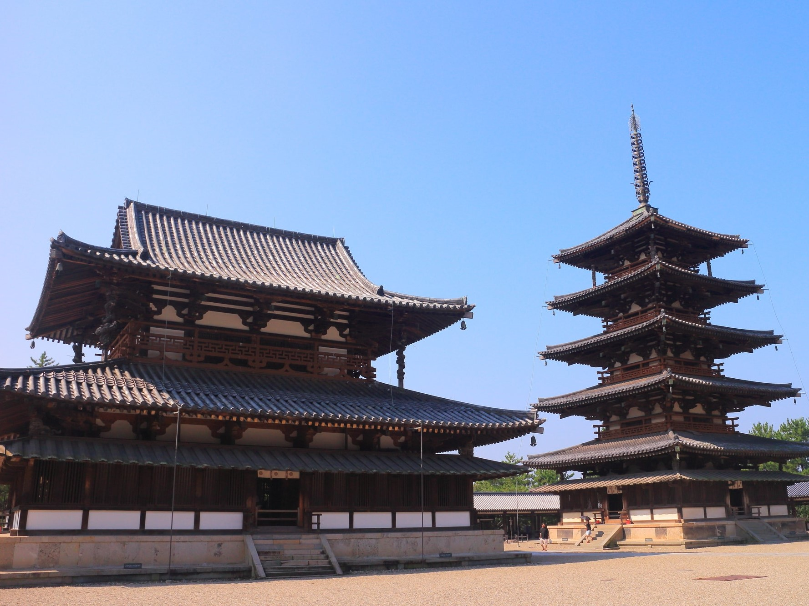
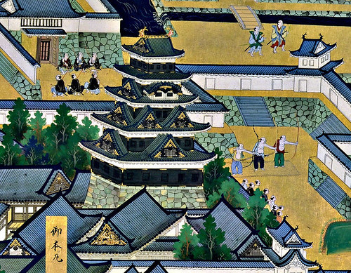
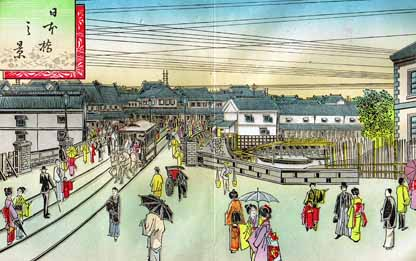
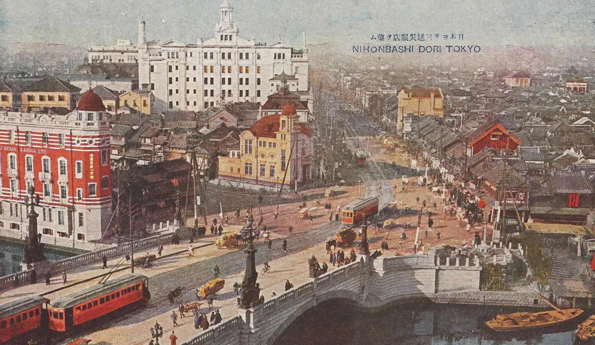
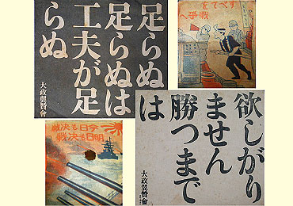

学習モード
時代選択
弥生
飛鳥
奈良
平安
鎌倉
室町
安土桃山
江戸
明治
大正
昭和(戦前)
昭和(戦後)
弥生
年号選択
57
239
飛鳥

年号選択
538
593
603
604
607
645
663
697
701
奈良
年号選択
710
743
平安
年号選択
794
797
804
894
939
1016
1086
1167
鎌倉
年号選択
1192
1221
1232
1274
1297
室町
年号選択
1334
1338
1404
1428
1467
1485
1488
1492
1498
1517
1519
1543
1549
安土桃山
年号選択
1560
1575
1582
1588
1600
江戸

年号選択
1603
1615
1635
1637
1639
1642
1680
1688
1709
1716
1765
1772
1775
1787
1789
1837
1840
1841
1853
1854
1858
1860
1861
1867
明治

年号選択
1868
1869
1871
1872
1873(1)
1873(2)
1876
1877
1889
1894
1902
1904
大正

年号選択
1910
1914
1915
1917
1918
1919(1)
1919(2)
1919(3)
1920
1923
1925(1)
1925(2)
昭和(戦前)

年号選択
1929
1931
1932
1936
1937
1938
1939
1940
1941
昭和(戦後)
年号選択
1945
1946
1950
1951
1956
1964
1965
1972
1978
時代
< 内容 >
< ゆる説明 >